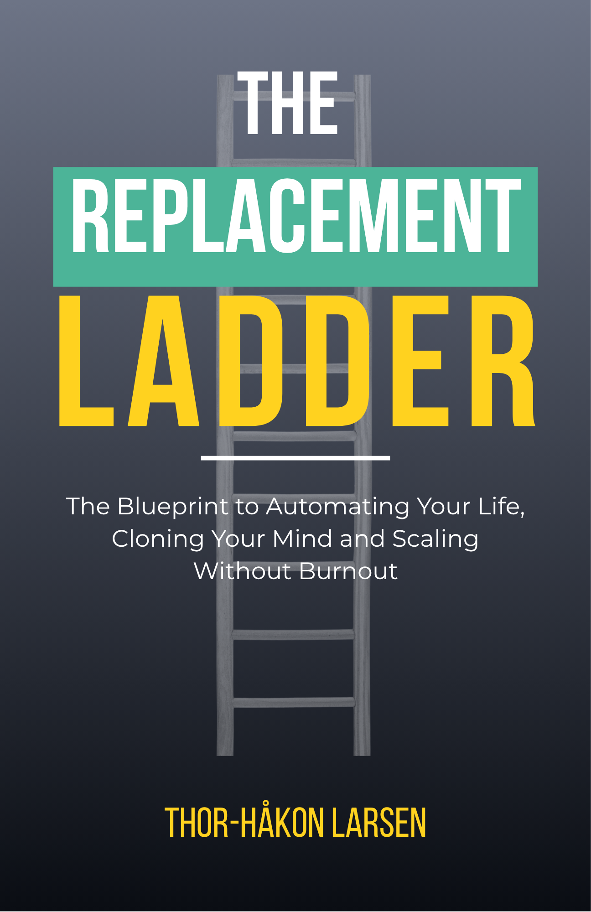

Who, Not You
The Blueprint to Automating Your Life, Cloning Your Mind, and Scaling Without BurnoutBlåkopien for å automatisere livet ditt, klone tankene dine og skalere uten utbrenthet
It’s 10:45 PM on a Tuesday. You’re editing a proposal your team was supposed to finish three hours ago. You built a successful business. Now it’s holding you hostage.Klokken er 22:45 en tirsdag. Du redigerer et tilbud teamet ditt skulle ha levert for tre timer siden. Du bygde en vellykket bedrift. Nå holder den deg som gissel.
About the BookOm boken
Who, Not You presents the Replacement Ladder — a systematic framework for extracting yourself from the daily operations of your own business. Automation first. AI second. Humans third. You only for what only you can do. This is not a book about working harder or delegating better. It’s a complete operating system for entrepreneurs who are trapped by their own competence. Learn the Bottleneck Paradox, the Zero-Based Time Audit that eliminates 20–30% of your workload overnight, how to build a Digital Twin that handles decisions in your voice, the Iron Gatekeeper that filters 80% of incoming demands, the 10-80-10 Factory for production without your involvement, and the Morning Brief that lets you manage your entire business in 30 minutes a day. From operator to sovereign architect.
Who, Not You presenterer Erstatningsstigen — et systematisk rammeverk for å trekke deg ut av den daglige driften i din egen bedrift. Automatisering først. AI nummer to. Mennesker nummer tre. Du — kun for det bare du kan gjøre. Dette er ikke en bok om å jobbe hardere eller delegere bedre. Det er et komplett operativsystem for gründere som er fanget av sin egen kompetanse. Lær Flaskehalsen-paradokset, Nullbasert tidsrevisjon som eliminerer 20–30% av arbeidsmengden din over natten, hvordan du bygger en Digital Tvilling som tar beslutninger med din stemme, Jernvokteren som filtrerer 80% av innkommende krav, 10-80-10-fabrikken for produksjon uten din involvering, og Morgenbriefingen som lar deg styre hele bedriften på 30 minutter om dagen.
What You’ll LearnHva du vil lære
- The Replacement Ladder: a hierarchy for systematically removing yourself from operationsErstatningsstigen: et hierarki for systematisk å fjerne deg selv fra driften
- Zero-Based Time Audit: identify and eliminate 20–30% of your workloadNullbasert tidsrevisjon: identifiser og eliminer 20–30% av arbeidsmengden
- Digital Twin: clone your decision-making into AI systems that speak in your voiceDigital Tvilling: klon beslutningene dine til AI-systemer som snakker med din stemme
- Iron Gatekeeper: filter 80% of incoming demands before they reach youJernvokteren: filtrer 80% av innkommende krav før de når deg
- 10-80-10 Factory: a production framework that runs without your daily involvement10-80-10-fabrikken: et produksjonsrammeverk som kjører uten din daglige involvering
- Morning Brief: manage your entire business in 30 minutes per dayMorgenbriefingen: styr hele bedriften på 30 minutter om dagen
Who This Book Is ForHvem boken er for
For high-performing entrepreneurs at $100K–$2M+ revenue who are trapped by their own competence — agency owners, knowledge experts, consultants, and modern founders who built something that works, and now can’t step away from it.
For høytpresterende gründere med 1–20M+ NOK i omsetning som er fanget av sin egen kompetanse — byråeiere, kunnskapseksperter, konsulenter og moderne grunnleggere som bygde noe som fungerer, og nå ikke klarer å gå fra det.
DetailsDetaljer
LanguageSpråk
EnglishEngelsk
GenreSjanger
Business & ProductivityNæringsliv & produktivitet
ComparableSammenlignbare
The 4-Hour Workweek (Ferriss), Buy Back Your Time (Martell), The E-Myth Revisited (Gerber), Atomic Habits (Clear)
Stay in the LoopHold deg oppdatert
Get notified when this title is available.Få beskjed når denne tittelen er tilgjengelig.
SubscribeAbonner